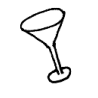

Gibson

Description
This is like a martini, only instead of an olive it's garnished with an electric guitar. I mean, a cocktail onion.
Ingredients
Steps
-
Using Nash Crosby's Still, transform the olive and gin into a cocktail onion and bottle Calcutta Emerald respectively
-
Using your Superhuman Cocktailcrafting skills, combine the cocktail onion and Calcutta Emerald into a Gibson
-
Enjoy!